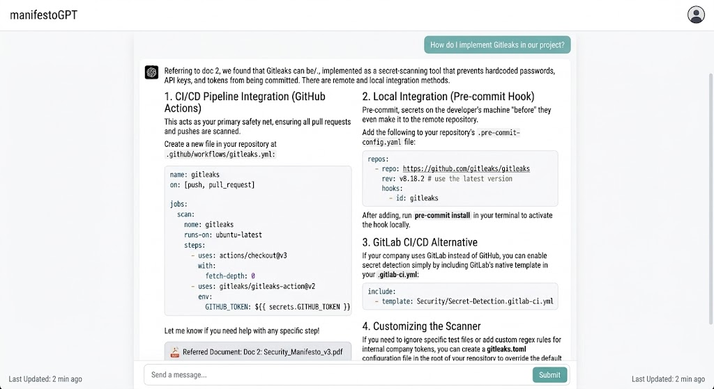

I am interested in building efficient and reliable language and
vision-language systems that can perform complex tasks without relying
solely on larger models or longer contexts. My research so far has
focused on parameter-efficient adaptation of compact multimodal models
and retrieval-augmented generation, with an emphasis on selecting and
using the right information rather than simply increasing model scale.
My current research interest is memory-efficient retrieval and context
management for RAG and LLM agents. I am particularly interested in how
we can reduce the memory and computational overhead of retrieval and
long-context reasoning while preserving the information needed for
reliable decisions. More broadly, I want to explore how efficient
memory, retrieval, and context management can make LLM agents more
reliable and practical to deploy.
I am also interested in AI for Software Engineering (AI4SE),
particularly the reliability and efficiency of coding agents. This
includes understanding how agents navigate repositories, use tools,
manage context, and recover from failures. I see software-engineering
agents as a useful setting for studying these problems because their
trajectories and outcomes can often be evaluated through concrete
signals such as tool interactions, repository state, and test results.
RE-SciVQA: Improving Scientific VQA With Context-Relevant Retrieval and
Lightweight MLLM Adaptation
Scientific Visual Question Answering over figures and text from academic papers.
RE-SciVQA pairs a compact multimodal model with a retrieval-augmented
pipeline to answer questions about scientific figures. To improve
efficiency, I fine-tuned a compact 4B multimodal model with QLoRA,
reaching accuracy competitive with larger 7–8B models at a
smaller footprint. The model is paired with a retrieval-augmented
pipeline that uses query expansion to surface relevant context from
academic papers before answering.
A retrieval-augmented system over scattered coding-convention
documents, giving developers a single place to ask how the team
does things. Built with a distilled Qwen 2.5 model and deployed on
Google Cloud Platform. It was widely adopted by developers and
improved their productivity.
Retrieval-augmented generation
Qwen 2.5 (distilled)
Google Cloud Platform
LLM serving

The assistant answering a developer question, grounded in the team's convention docs (note the cited source document).
DevSecOps / security automation
Security automation across the delivery pipeline. I built an
automated vulnerability-alert pipeline that pulls from feed APIs and
uses webhooks to push new vulnerability alerts to Slack, so the team
hears about issues as they surface. I also integrated OWASP
Dependency-Track into CI to scan SBOMs and flag critical
dependencies on new builds.
A complete end-to-end Android application for classroom
attendance: the teacher photographs the class and submits it to
the system, which detects and recognizes each student's face to
mark attendance. As shown in the architecture diagram, the
pipeline uses MTCNN for face detection and a FaceNet model for
128-dimensional face embeddings, with a Support Vector
Classifier matching each detected face against enrolled
students.
Android
MTCNN (face detection)
FaceNet embeddings
Support Vector Classifier
Client–server
System architecture: enrollment/training and inference. Click to enlarge.
A machine-learning coursework project (team of 3) on an imbalanced
binary classification task over tabular banking data. Because the
classes are imbalanced, we report AUC rather than
accuracy. The best model was XGBoost at
0.89 AUC,
with Random Forest at 0.83 AUC and a simple PyTorch neural network at
0.85 AUC. The work emphasized proper handling of class imbalance,
feature engineering (outlier removal, scaling, per-row statistics,
and binning), and k-fold cross-validation.
Designed and deployed a retrieval-augmented generation system for
querying internal coding standards and conventions (distilled model,
deployed on GCP; adopted across the engineering team).
Built a notification service to identify and report vulnerable
dependencies, strengthening application security.
Led migration of a legacy system to a modular monolith, improving
maintainability and scalability.
Designed a rate-limiting system for core services to improve API
reliability and prevent overload.
Stack: Java, Spring Boot, Hibernate, Python, GCP, Docker.
Education
B.Sc. in Computer Science, North South University
2016 – 2020
Concentration: Artificial Intelligence.
About
I'm a software engineer with about four and a half years of professional
experience, currently at WellDev, where I work on Java and Spring Boot
backend systems alongside applied AI and security-automation projects.
Outside of that work, I pursue independent AI research focused on making
large language and vision–language models more efficient and
practical to deploy.
My interests center on efficient and deployable LLMs and VLMs,
retrieval-augmented systems, and model evaluation — most recently
RE-SciVQA, which pairs a compact,
QLoRA-fine-tuned multimodal model with a retrieval pipeline for
scientific visual question answering. I'm now looking to pursue graduate
study to work on these problems more deeply.